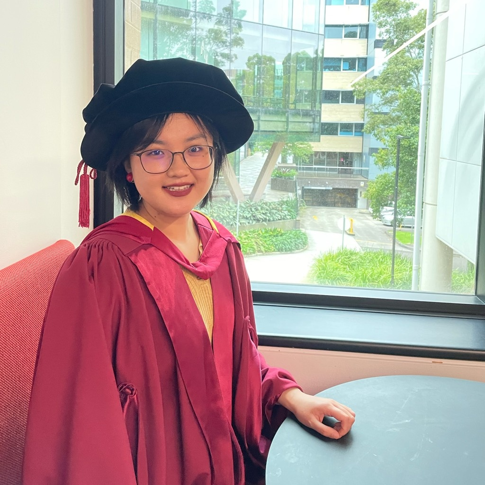
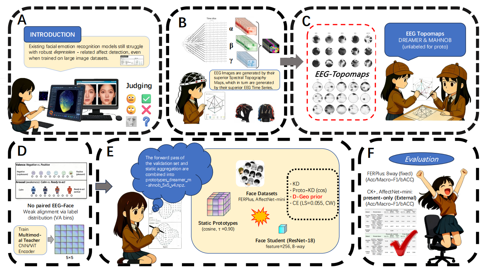
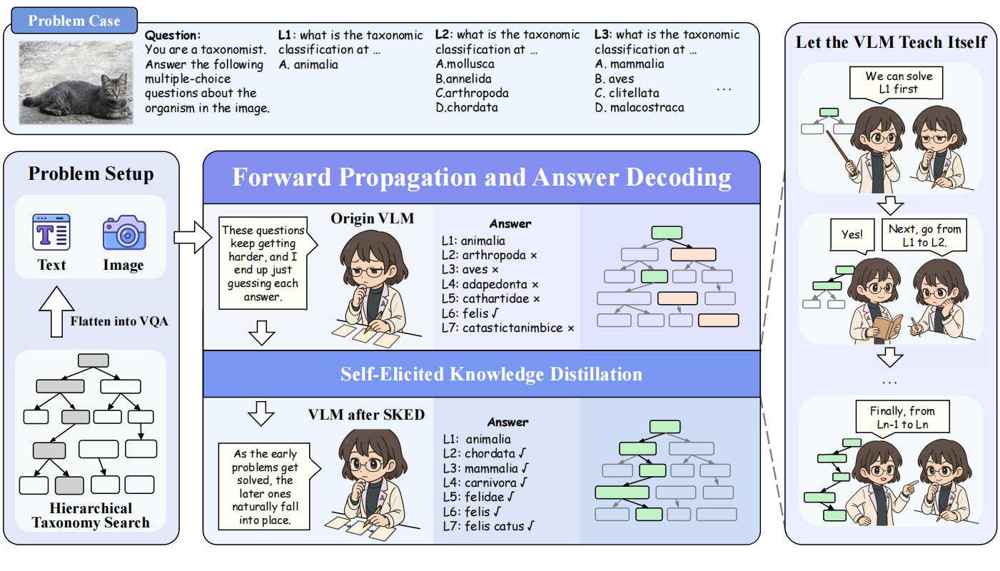
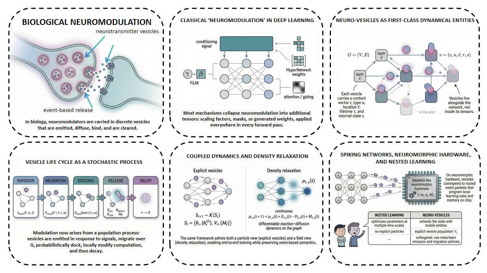
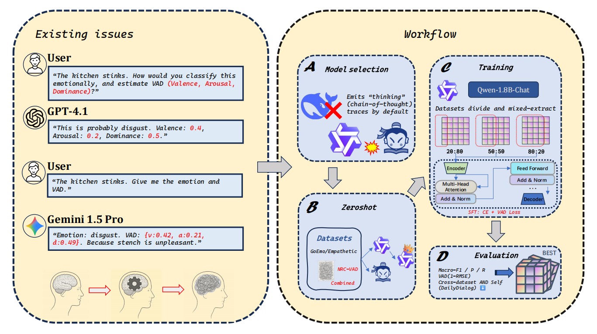

Zilin Li (李子林)
-
Undergraduate StudentSchool of Information and Intelligent Science
Donghua University, Shanghai, China -
Research InternBCMI Lab
Shanghai Jiao Tong University, Shanghai, China
Contact
- Email: tzulamlee@gmail.com
- ORCID: 0009-0002-4314-455X
- GitHub: github.com/Lixeeone
- HuggingFace: huggingface.co/Lixeeone
Research Interests
- Affective Computing
- Human–Computer Interaction
- Cognitive and Computational Neuroscience
- Brain-inspired Machine Learning
My research is guided by the principle of “AI4Science, Science2AI”: on the one hand, using artificial intelligence to accelerate scientific discovery; on the other hand, allowing scientific laws and mechanisms to inform the design and evolution of intelligent systems. Under this principle, I seek to revisit and re-construct “primitive biological structures” within computational models. In an interdisciplinary setting that combines computer science, psychology, and cognitive neuroscience, I use biological and cognitive mechanisms as inspiration for algorithmic architectures and learning paradigms, with the goal of addressing key challenges such as catastrophic forgetting, long-horizon sequence modeling, and performance bottlenecks.
During my undergraduate studies and early research experience, I have participated in projects focusing on mechanism- and theory-driven modeling. I have taken or self-studied courses and literature in affective computing, human–computer interaction, natural language processing, and cognitive & computational neuroscience. These experiences have given me a more integrated view of how these fields interact, and have helped me develop an “off-the-beaten-path” style of problem decomposition and solution design. For example, in modeling emotional and cognitive processes, I am particularly interested in extracting structurally meaningful and dynamically relevant features from the human perception–representation–decision pipeline, and mapping them into differentiable modules or learning rules, so that biological plausibility and robustness can be jointly improved.
A central question that motivates my work is how to better inspire machines from humans, and how to better enable machines to serve humans. I hope that, by grounding models in real human behavior and neural mechanisms, machine learning can gradually move beyond pure data fitting towards more embodied, interpretable, and adaptive forms of intelligence. At the same time, I aim for future intelligent systems not only to perform well on benchmarks, but also to provide long-term, trustworthy, and human-centered value in terms of safety, reliability, and human–AI collaboration in scientific and societal applications.
Academic Relations
Advisor
Ge Zhang (张鸽) is a Pujiang Talent （浦江人才） in Shanghai. She received her Ph.D. in Computer Science from Macquarie University, Australia, in 2024, and was awarded the Microsoft Research PhD Fellowship (2022, the only recipient in the Australia & New Zealand region). She serves as a reviewer for top-tier AI conferences and journals, including ICLR, NeurIPS, KDD, and TNNLS.
Publications
-
NeuroGaze-Distill: Brain-informed Distillation and Depression-Inspired Geometric Priors for Robust Facial Emotion RecognitionPreprint. arxiv.org/abs/2509.11916
-
Self-Empowering VLMs: Achieving Hierarchical Consistency via Self-Elicited Knowledge Distillation
-
Neuro-Vesicles: Neuromodulation Should Be a Dynamical System, Not a Tensor Decoration
-
EmoLoom-2B: Fast Base-Model Screening for Emotion Classification and VAD with Lexicon-Weak Supervision and KV-Off EvaluationPreprint. arxiv.org/abs/2601.01112